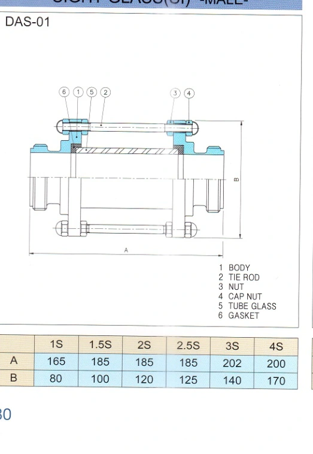
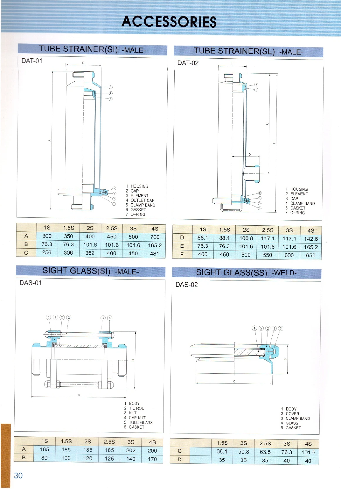

원본 카탈로그 발췌 · 현재 제품 사진이 아닙니다.
장치류 / DAS-01
사이트글라스 SI
Sight Glass SI
원본 명칭·표 수치 대조 / 현행 사양 미확인사이트글라스 SI의 과거 카탈로그 수록 자료입니다. 아래 도면과 표는 현재 판매 사양을 보증하지 않습니다.
- 모델 / 형식
- DAS-01
- 재질
- SUS 304 / 316 / 316L (제품군 공통 설명; 모델별 적용 확인 필요)
- 규격
- 1S / 1.5S / 2S / 2.5S / 3S / 4S
- 연결 방식
- Male
SPECIFICATIONS
사양 및 치수
- 치수기호는 원본 표 그대로입니다. 해당 페이지에 명시된 단위를 찾지 못해 mm로 단정하지 않았습니다.
- 재질은 해당 제품군 소개에 열거된 후보이며, 이 모델의 세 재질 공급을 보장하지 않습니다.
- 과거 카탈로그 수록 정보입니다. 발주·설계 전 현행 도면, 재질, 단위와 공급 가능 여부를 확인하세요.
| 규격 | A | B |
|---|---|---|
| 1S | 165 | 80 |
| 1.5S | 185 | 100 |
| 2S | 185 | 120 |
| 2.5S | 185 | 125 |
| 3S | 202 | 140 |
| 4S | 200 | 170 |
재질 304·316·316L 및 연결 규격은 서로 동일한 것으로 취급하지 않습니다. 제품별 원본 확인이 필요합니다.
DRAWINGS & DOCUMENTS
도면 및 자료

원본 페이지 이미지 다운로드 ↓원본 파일: merged.pdf / PDF 29쪽 · 인쇄 30쪽 · 현재 취급 상태: 과거 수록 품목 · 현재 취급 및 사양 확인 필요
원본 PDF 해당 페이지 ↗ 과거 카탈로그 다운로드 ↓같은 제품군 둘러보기
호환 부품 추천이 아닙니다. 결합 가능 여부는 별도 확인이 필요합니다.


LET’S TALK ABOUT YOUR REQUIREMENTS
필요한 부품부터,
제작과 수리까지.
제품명, 규격 또는 도면을 기준으로 문의 내용을 정리해 보세요.